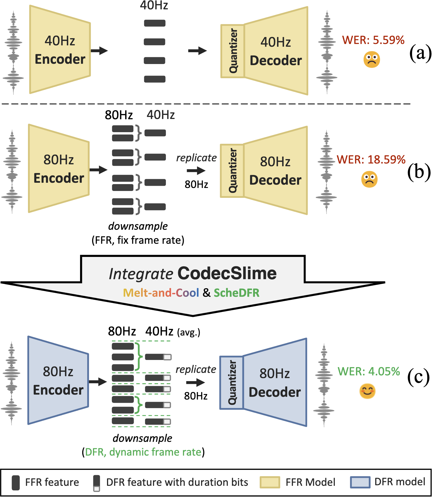

| Ground Truth | CodecSlime-VQ8k (0.52 + 0.08) |
CodecSlime-FSQ18k (0.57 + 0.08) |
DAC (1.00) | LLM-Codec (0.85) | WavTokenizer (0.98) | BigCodec-VQ8k (0.57) | BigCodec-VQ18k (0.57) | BigCodec-FSQ18k (0.57) | BigCodec-FSQ84k (0.65) |
|---|---|---|---|---|---|---|---|---|---|
[Show transcript] |
|||||||||
[Show transcript] |
|||||||||
[Show transcript] |
|||||||||
[Show transcript] |
|||||||||
[Show transcript] |
CodecSlime: Temporal Redundancy Compression of Neural Speech Codec via Dynamic Frame Rate

Current mainstream neural speech codecs are fixed-frame-rate (FFR), which allocate the same number of tokens to every equal-duration slice. However, speech is inherently non-uniform in temporal information density. As a result, many tokens are wasted on steady-state segments like long vowels and silences. To address this mismatch, we present CodecSlime, a plugin-style method for compressing temporal redundancy through supporting dynamic frame rate (DFR) on neural speech codecs.
Our method is unsupervised and architecture-agnostic, combining two key innovations, ScheDFR and Melt-and-Cool, for adapting inference and training, respectively. When integrated into a typical VQ-GAN codec backbone and operating at 40Hz DFR (≈600bps), the reconstruction WER of CodecSlime is reduced by up to 28% relative to conventional FFR baselines with the same model architecture and similar bitrates, while other metrics are also competitive. CodecSlime also enables flexible trade-offs between reconstruction quality and bitrate: a single model supports inference at multiple frame rates and consistently outperforms FFR models at the corresponding frame rates.
Left figure: Comparison of: (a) conventional 40 Hz fixed-rate model,(b) 80 Hz fixed-rate model with naive fix-rate downsampling, and
(c) CodecSlime-integrated model, which combines Melt-and-Cool training with ScheDFR for inference, achieving the lowest WER.
Main Results: Speech Reconstruction
Testset: LibriTTS test-clean
We compare CodecSlime (40Hz dynamic frame rate, built upon BigCodec) with state-of-the-art neural codecs under ≈40Hz or ≈600bps using the LibriTTS test-clean datasets. The results are downsampled to 16 kHz for fair comparison. The demo presents audio samples from CodecSlime and baseline methods, showcasing its performance in temporal compression and reconstruction quality. The numbers in parentheses after model names indicate the encoding bitrate (in kbps) of each model. Specifically, CodecSlime's bitrate is decoupled into two components: content and duration, each explicitly indicated.
Testset: LibriSpeech test-clean
We also evaluated CodecSlime on the LibriSpeech test-clean dataset to further validate its performance. The results are split into two sections based on the quantizer type used: VQ-based and FSQ-based. CodecSlime consistently outperforms the BigCodec baselines in both categories, achieving lower WER and higher intelligibility and quality metrics.
| Model | Bitrate (kbps) | WER | STOI | PESQ | SECS | UTMOS | ViSQOL |
|---|---|---|---|---|---|---|---|
| GT | 1.67 | 1.000 | 4.64 | 1.000 | 4.07 | 5.00 | |
| BigCodec-VQ8128 | 0.52 | 5.00 | 0.885 | 1.99 | 0.920 | 3.95 | 3.83 |
| BigCodec-VQ18k | 0.57 | 4.56 | 0.890 | 2.03 | 0.924 | 3.97 | 3.86 |
| CodecSlime-VQ8192 | 0.52+0.08 | 4.38 | 0.895 | 2.07 | 0.933 | 4.00 | 3.89 |
| BigCodec-FSQ18k | 0.57 | 5.48 | 0.883 | 1.94 | 0.905 | 3.81 | 3.85 |
| BigCodec-FSQ84k | 0.65 | 4.25 | 0.893 | 2.06 | 0.914 | 3.96 | 3.89 |
| CodecSlime-FSQ18k | 0.57+0.08 | 4.24 | 0.895 | 2.03 | 0.914 | 4.01 | 3.84 |
Generalization Ability
One model for various frame rates at inference time
This experiment evaluates how well a single CodecSlime model generalizes across different inference frame rates. The same CodecSlime model, fine-tuned once at 40 Hz using ScheDFR, is tested under multiple runtime configurations. In contrast, the fixed-rate FFR baselines are individually trained for each specific frame rate (40, 50, 67, and 80 Hz). All models share the same backbone architecture (except for the CNN downsampling rate) and the same quantizer configuration (FSQ with 18225 codes). As shown below, higher frame rates lead to lower WER and higher PESQ. However, CodecSlime consistently outperforms the FFR baseline, demonstrating strong generalization and eliminating the need for retraining at each target rate.
 |
This interactive table compares audio reconstructions from CodecSlime and FFR baselines across varying inference frame rates. The same CodecSlime model is used throughout, with only the frame rate adjusted at test time. In contrast, each FFR variant is separately trained for its target frame rate. We provide 3 utterances from LibriTTS test-clean set, and you can pick any of them through the buttons below.
[Show transcript]
| Frame Rate (Hz) | Content Bitrate (kbps) | CodecSlime-FSQ18k | BigCodec-FSQ18k |
|---|---|---|---|
| 40 | 0.57 | ||
| 50 | 0.71 | ||
| 67 | 0.95 | ||
| 80 | 1.13 |
[Show transcript]
| Frame Rate (Hz) | Content Bitrate (kbps) | CodecSlime-FSQ18k | BigCodec-FSQ18k |
|---|---|---|---|
| 40 | 0.57 | ||
| 50 | 0.71 | ||
| 67 | 0.95 | ||
| 80 | 1.13 |
[Show transcript]
| Frame Rate (Hz) | Content Bitrate (kbps) | CodecSlime-FSQ18k | BigCodec-FSQ18k |
|---|---|---|---|
| 40 | 0.57 | ||
| 50 | 0.71 | ||
| 67 | 0.95 | ||
| 80 | 1.13 |
Testset of unseen languages: MLS subset
MLS subset includes 210 randomly selected dev/test utterances from Multi-lingual LibriSpeech covering major Western languages which are not covered in the training set. The results shows that CodecSlime also generalizes well to unseen languages in both VQ and FSQ settings.
| Model | Bitrate (kbps) | WER | STOI | PESQ | SECS | UTMOS | ViSQOL |
|---|---|---|---|---|---|---|---|
| GT | 8.70 | 1.000 | 4.64 | 1.000 | 2.80 | 5.00 | |
| BigCodec-VQ8192 | 0.52 | 36.20 | 0.859 | 1.79 | 0.929 | 2.71 | 3.71 |
| BigCodec-VQ18k | 0.57 | 31.19 | 0.872 | 1.90 | 0.937 | 2.75 | 3.80 |
| CodecSlime-VQ8192 | 0.52+0.08 | 28.80 | 0.874 | 1.92 | 0.951 | 2.74 | 3.83 |
| BigCodec-FSQ18k | 0.57 | 35.74 | 0.861 | 1.82 | 0.942 | 2.69 | 3.74 |
| BigCodec-FSQ84k | 0.65 | 32.23 | 0.865 | 1.86 | 0.942 | 2.72 | 3.77 |
| CodecSlime-FSQ18k | 0.57+0.08 | 32.42 | 0.877 | 1.91 | 0.935 | 2.86 | 3.77 |
Ablation Study
On ScheDFR
This section compares different inference-time downsampling strategies on 80 Hz features, all reduced to 40 Hz. The models differ in whether they apply ScheDFR for dynamic frame reduction. Specifically, both the DFR foundation model (backbone + Melt) and the finetuned model (backbone + Melt + Cool) are evaluated with and without ScheDFR. The fixed-pattern baselines simply merge every two adjacent frames, while the ScheDFR variants dynamically determine the downsample scheme using the DP-based scheduler.
| Ground Truth | DFR Foundation Model (80Hz → 40Hz, w/o ScheDFR) |
DFR Foundation Model (80Hz → 40Hz, w/ ScheDFR) |
Finetuned Model (80Hz → 40Hz, w/o ScheDFR) |
Finetuned Model (80Hz → 40Hz, w/ ScheDFR) |
|---|---|---|---|---|
[Show transcript] |
On Melt-and-Cool
This section illustrates the impact of different training strategies under a unified inference configuration (still 80 Hz → 40 Hz, with ScheDFR consistently applied). All models are based on the same FFR backbone, and only differ in whether they include the Cool stage or the full Melt-and-Cool recipe during training.
| Ground Truth | FFR Backbone Model (w/o Melt-and-Cool) |
FFR Backbone Model (+ Cool (w/o Melt)) |
FFR Backbone Model (+ Melt-and-Cool) |
|---|---|---|---|
[Show transcript] |
DFR Scheduling: Case Study
The figure below visually illustrates how the CodecSlime DFR scheduler operates on the 237_126133_000002_000004 utterance from the LibriTTS test-clean set. The top waveform aligns with the forced phoneme sequence, while the black-and-white bar below depicts the model's predicted frame-reduction pattern. Here, the target downsample rate is 2, and the maximum downsample segment length is 4.
As shown, the scheduler adaptively merges frames in regions of long pauses or steady vowels, effectively exploiting temporal redundancy. It also captures "counterintuitive" compression strategies across phoneme boundaries when beneficial for reconstruction. This example highlights CodecSlime's strength: instead of relying on handcrafted heuristics, it plans downsampling directly from the learned representation space—enabling big bitrate reduction while preserving perceptual quality.
 |